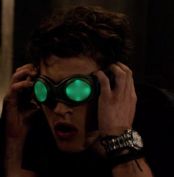
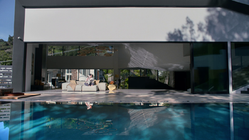
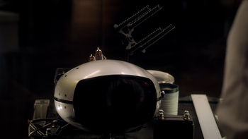
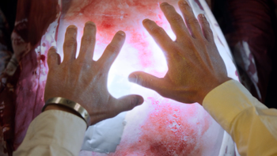
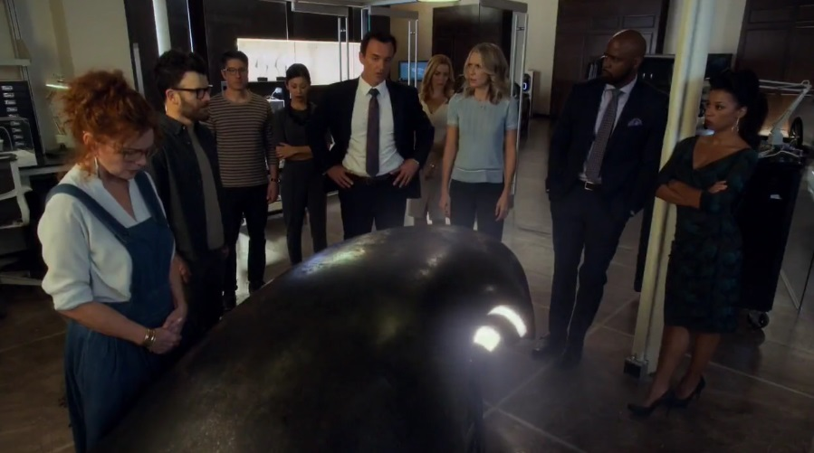

Sinopsis
Un grupo de adolescentes descubre que tienen una cosa en común: sus padres pertenecen a un grupo secreto de supervillanos llamado El Orgullo.
Al saber esto, los chicos se ven obligados a unirse para enfrentarse a su enemigo común a pesar de que no se soportan entre ellos.
Así comienzan sus andanzas como superhéroes nóveles cuyo objetivo es acabar con El Orgullo y todos sus miembros.
En el camino descubrirán más secretos sobre sus padres y sobre ellos mismos y tendrán que tomar una decisión: mantener los secretos y seguir con su vida normal al lado de sus padres o renunciar a su familia y a una vida normal en favor de la justicia.
Necesidades
A lo largo de la serie aparecen diversos dispositivos, algunos responden a necesidades actualmente no planteadas o incluso éticamente incorrectas, otros aluden a necesidades que en más de una ocasión se han planteado en otras obras.
Dispositivo (Interfaz/tecnología):
Guantes de energía(Fistigons)
Primera Aparición:
Capítulo 1,Reunion (Diseño)/Capítulo 4, Fifteen
Necesidad:
Los guantes lanzan ondas y rayos de energía que repelen a los objetivos como si fuera una onda de choque. Tendrían aplicaciones en defensa y seguridad incluso servirían para derribar drones, una necesidad creciente en la época actual.
Dispositivo (Interfaz/tecnología):
Gafas de rayos X(X-Ray Specs)
Primera Aparición:
Capítulo 3,Destiny
Necesidad:
Otorgan visión de rayos X al portador pudiendo servir para una gran cantidad de propósitos. En la serie lo utilizan para ver a través de las paredes, como herramienta de vigilancia y espionaje, pero podría utilizarse para otros propósitos como aplicaciones médicas ya que, como se ve en la serie, podemos ver el interior de una persona en tiempo real y de una forma bastante cómoda.
Dispositivo (Interfaz/tecnología):
Staff Of One
Primera Aparición:
Capítulo 1,Reunion
Necesidad:
Es un báculo que aparentemente está creado con nanotecnología definida por su creadora como “muy especial” y “sin parangón” aunque algunas personas definen sus funciones como magia ya qué lo que hace es hacer realidad los pensamientos del usuario, con ciertas limitaciones.
Además solo funciona con su dueño al cual reconoce analizando el AND de la sangre que obtiene al pinchar a quien se dispone a usarlo, si es un ADN suficientemente similar al de su dueño se activa. Si el potencial usuario no es el dueño el bastón se calienta forzando a soltarlo y posteriormente se desactiva. También ha mostrado la capacidad de acudir a las manos de su dueño a voluntad de éste.
Por otra parte su sistema biométrico de seguridad, tendría varias aplicaciones en seguridad, desde bancos hasta registros o control de armas.
Dispositivo (Interfaz/tecnología):
Wizey(Casa de los Minoru)
Primera Aparición:
Capítulo 1,ReunionNecesidad:
La casa de los Minoru dispone de tecnología domótica de vanguardia, toda ella controlada por una inteligencia artificial llamada Wizey. Una casa con estas características puede ser la respuesta a necesidades como la accesibilidad, la seguridad o simplemente mejorar la calidad de vida en el domicilio.
Dispositivo (Interfaz/tecnología):
Máquina del Tiempo
Primera Aparición:
Capítulo 5,Kingdom
Necesidad:
Más que una máquina del tiempo es un receptor de mensajes visuales del futuro. La necesidad de ver el futuro o una versión de él es éticamente cuestionable y puede no significar que se pueda cambiar, pero en todo caso puede tener relevancia a la hora de adelantar descubrimientos o prepararse ante eventos, etc.
Dispositivo (Interfaz/tecnología):
Guantes curativos
Primera Aparición:
Capítulo 7,Refraction
Necesidad:
Estos guantes que se adhieren a la piel del usuario tienen la capacidad de curar cualquier herida o enfermedad de la persona a la que el usuario imponga las manos. Responde a necesidades médicas, en especial de los equipos sanitarios móviles, ya que es un dispositivo muy fácilmente transportable y puede solucionar la mayoría de problemas médicos de urgencia con una facilidad de uso increíble.
Dispositivo (Interfaz/tecnología):
Cápsula de resurrección/sacrificio
Primera Aparición:
Capítulo 1,Reunion
Necesidad:
El funcionamiento de la cápsula aún no está muy bien explicado pero se puede observar en la serie que introduciendo una persona viva en una de las cápsulas se puede resucitar o curar a otra en otra cápsula igual sacrificando a la primera persona.
Sus aplicaciones médicas son éticamente cuestionables pero sería una alternativa para las regiones que tienen legalizada la pena de muerte, ya que podrían resucitar o curar a la víctima o a alguien necesario para la sociedad en vez de aplicar la pena de muerte sin obtener beneficio.
Tecnologías involucradas
Es una serie actual y basada en la época en la que se estrenó por lo que la mayoría de tecnologías son imaginadas. Aun así algunos elementos están basados en la actualidad por lo que también encontramos algunas tecnologías que aun siendo de vanguardia están disponibles actualmente.
Tecnologías disponibles en el momento de la producción
Algunos sistemas domóticos e inteligencias artificiales como Wizey y la casa de los Minoru se están desarrollando actualmente e incluso existen modelos funcionales. Los rayos X es una tecnología disponible actualmente aunque no se ha llegado a tal grado de sofisticación como el mostrado en la serie.
Las medidas biométricas para la seguridad del Staff of One son similares a tecnologías ya desarrolladas como la biometría ocular, o las huellas dactilares, y el análisis e identificación de un sujeto a través de su ADN es también posible con la tecnología actual.
La tecnología de “Segunda Piel” implementada por el MIT sería similar a la utilizada para adherir los guantes curativos a las manos del usuario y se podría utilizar como un comienzo para lograr esta tecnología.
Tecnologías imaginadas en el momento de la producción
La tecnología de pulsos necesaria para los Fistigons aún no ha sido desarrollada
La nanotecnología capaz de actuar a partir de impulsos cerebrales haciendo realidad los pensamientos también es imaginada actualmente, aunque hay grandes avances tanto en el campo de la nanotecnología como en el de los sensores cerebrales.
La máquina del tiempo se basa en tecnología óptica ya que funciona a partir de luz y también es imaginada ya que aún no se conoce tanto sobre las propiedades de los fotones como para utilizarlos de esta manera.
La cápsula de resurrección/sacrificio es quizás la más imaginaria de todas ya que la resurrección es un hecho del todo imposible e impensable por ahora.
Aunque todas las tecnologías mencionadas en este subapartado son imaginadas, las interfaces que algunas utilizan para su uso y su diseño no son extraños puesto que se asemejan a objetos existentes como es el caso de la máquina del tiempo que parece una televisión.
Impacto
Al ser una serie actual y reciente, no se puede apreciar aun si ha tenido algún impacto real. Sin embargo, fijándonos en otros casos de otras obras y tecnologías, y teniendo en cuenta que algunas de las necesidades e incluso de las tecnologías mencionadas aparecen también en otras obras (visión de rayos X, casas inteligentes, máquinas del tiempo, etc.), es muy posible que contribuya en un futuro a impulsar el desarrollo o la mejora de estas tecnologías.
Referencias
- MarvelCUWikia, Fistigons, http://marvelcinematicuniverse.wikia.com/wiki/Fistigons, (última visita: 22 marzo 2018)
- RunawaysWiki, Wizard, http://runaways.wikia.com/wiki/Wizard, (última visita: 22 marzo 2018)
- RunawaysWiki, Casa Minoru, http://runaways.wikia.com/wiki/Minoru_House, (última visita: 22 marzo 2018)
- MarvelCUWikia, X-Ray Specs, http://marvelcinematicuniverse.wikia.com/wiki/X-Ray_Specs, (última visita: 22 marzo 2018)
- MarvelCUWikia, Staff of One, http://marvelcinematicuniverse.wikia.com/wiki/Staff_of_One, (última visita: 22 marzo 2018)
- MarvelCUWikia, Guantes Curativos, http://marvelcinematicuniverse.wikia.com/wiki/Frank_Dean%27s_Healing_Gloves, (última visita: 22 marzo 2018)
- MarvelCUWikia, Máquina del tiempo, http://marvelcinematicuniverse.wikia.com/wiki/Victor_Stein%27s_Time_Machine, (última visita: 22 marzo 2018)
- RunawaysWiki, Runaways, http://runaways.wikia.com/wiki/Runaways_Wiki , (última visita: 22 marzo 2018)
- The New Now, Interfaces cerebrales y dispositivos controlados por la mente, https://www.thenewnow.es/tecnologia/intefaces-cerebrales-y-dispositivos-controlados-por-la-mente/, (última visita: 22 marzo 2018)
- Xataka, científicos del MIT crean una "segunda piel" artificial, https://www.xataka.com/medicina-y-salud/adios-a-las-arrugas-crean-un-nuevo-material-que-tensa-cuida-y-proteje-la-piel, (última visita: 22 marzo 2018)